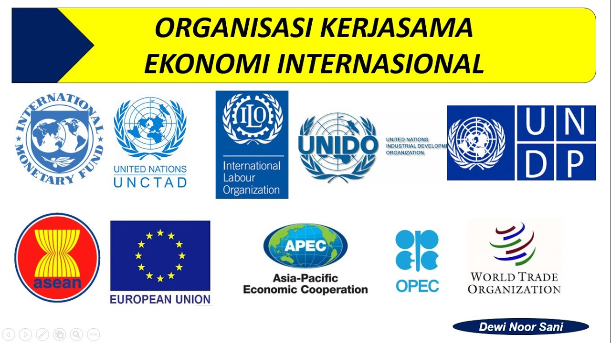

Kerja sama internasional adalah kerja sama yang dilakukan antara dua negara atau lebih yang ada di seluruh negara untuk mencapai tujuan bersama. Kerja sama ini dapat dilakukan secara bilateral maupun multilateral. Biasanya kerja sama ini dilakukan antara negara dari kawasan yang berbeda, contohnya kerja sama Indonesia dengan Jerman. Tujuan dilakukan kerja sama internasional antara lain; mepererat persahabatan, menciptakan perdamaian dunia, meningkatkan pertumbuhan ekonomi, melengkapi kebutuhan negara
Kerja sama internasional dilakukan oleh negara - negara di seluruh dunia dan tidak terbatas pada wilayah atau kawasan manapun. Contoh kerja sama yang terjadi antara lain:
Kerja sama internasional ini bertujuan untuk mendiskusikan dan memecahkan masalah mengenai perdagangan yang terjalin antar negara. WTO memiliki beberapa prinsip, seperti prinsip liberasi perdagangan, non diskriminasi, dan stabilitas perdagangan antar negara.
Kerja sama ini merupakan sebuah organisasi yang dapat memberikan pinjaman kepada negara yang membutuhkan IMF memiliki tujuan untuk meningkatkan kestabilan keuangan internasional.
APEC adalah forum kerja sama regional Indonesia dengan 21 negara di lingkar Samudera Pasifik di bidang ekonomi dan berdiri pada tahun 1989. APEC memiliki tujuan dengan tujuan utamanya yaitu untuk meningkatkan kesejahteraan di Asia Pasifik yang dapat terwujud dengan memfasilitasi perdagangan dan investasi yang lebih bebas dan terbuka.